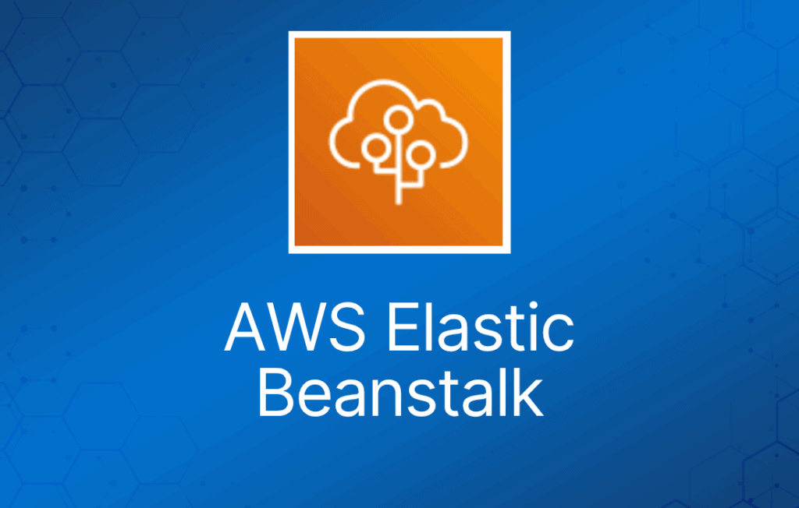
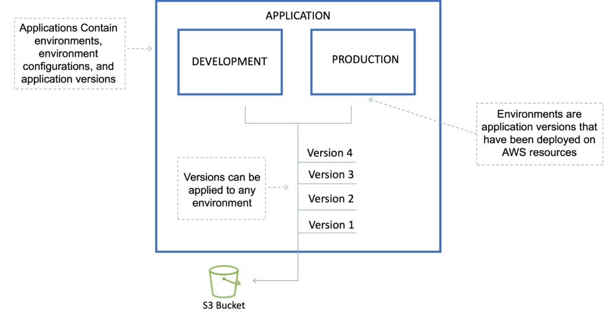
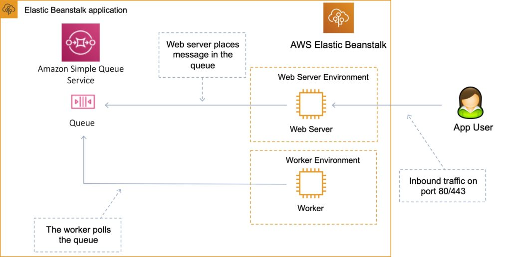
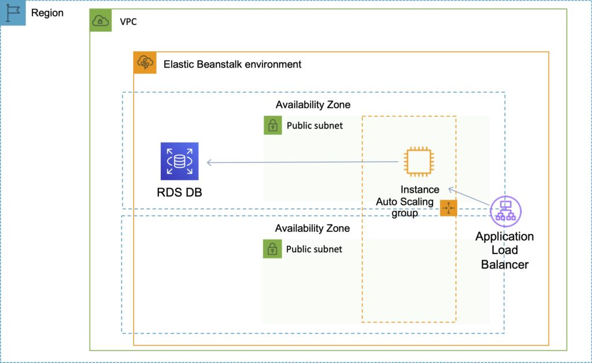
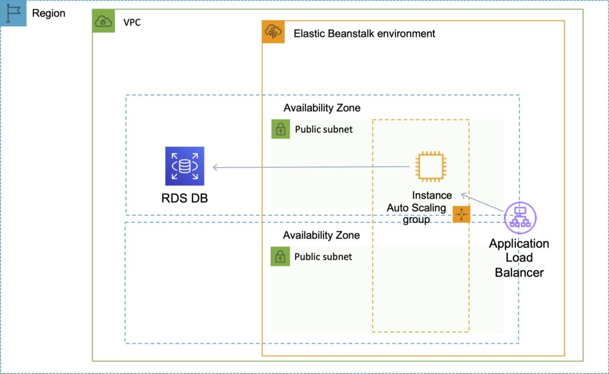

AWS Elastic Beanstalk 可用于在 AWS 云中快速部署和管理应用。
开发者上传应用，Elastic Beanstalk 负责处理容量预置、负载均衡、auto-scaling 和应用健康监控等部署细节。
可以使用多个可用区来提升应用的可靠性和可用性。
被视为一种 Platform as a Service（PaaS）解决方案。
支持以下平台：
- Docker
- Multicontainer Docker
- Preconfigured Docker
- Go
- Java SE
- Tomcat
- .NET Core on Linux
- .NET on Windows Server
- Node.js
- PHP
- Python
- Ruby
开发者可以专注于编写代码，无需担心基础设施部署。
你只需为预置的资源付费，Elastic Beanstalk 本身不收费。
Elastic Beanstalk 会自动扩缩你的应用。
可以选择最适合你应用的 EC2 实例类型。
可以保留完全的管理控制权，也可以交给 Elastic Beanstalk 处理。
Managed Platform Updates 功能会自动应用操作系统和平台的更新。
Elastic Beanstalk 监控和管理应用健康状况，信息可通过 dashboard 查看。
与 CloudWatch 和 X-Ray 集成，提供性能数据和指标。
与 Amazon VPC 和 AWS IAM 集成。
可以预置大多数数据库实例。
将你的应用文件以及（可选的）服务器日志文件存储在 Amazon S3 中。
应用数据也可以存储在 S3 上。
支持多环境以实现版本管理。
来自 Git 仓库的变更会被复制。
支持 Linux 和 Windows AMI。
代码通过 WAR 文件或 Git 仓库部署。
可以使用 AWS toolkit for Visual Studio 和 AWS toolkit for Eclipse 来部署 Elastic Beanstalk。
在单个区域内实现容错。
默认情况下应用是公开可访问的。
无需登录应用服务器即可访问日志。
提供 ISO、PCI、SOC 1、SOC 2 和 SOC 3 合规性，并满足 HIPAA 适用条件。
支持基于 arm64 的 AWS Graviton 处理器。
Elastic Beanstalk 的层次结构
Elastic Beanstalk 由多个层次组成，各层说明如下：
Application（应用）：
- 在 Elastic Beanstalk 中，application 是不同元素的集合，例如 environment、environment configuration 和 application version。
- 一个 application 中可以包含多个 application version。
Application version（应用版本）：
- application version 是对一段可部署代码的特定引用。
- application version 通常指向存放代码的 Amazon S3 bucket。
Environment（环境）：
- environment 指已部署到 AWS 资源上的某个 application version。
- 这些资源由 AWS Elastic Beanstalk 配置和预置。
- environment 由 Elastic Beanstalk 创建的所有资源组成，而不仅仅是运行你上传代码的 EC2 实例。

Environment tier（环境层）：
- 根据应用的用途决定 Elastic Beanstalk 如何预置资源。
- Web server 是标准应用，监听并处理 HTTP 请求，通常在 80 端口。
- Worker 是专用应用，带有后台处理任务，监听 Amazon SQS 队列中的消息。
Environment configuration（环境配置）：
- environment configuration 是一组参数和设置的集合，决定 Elastic Beanstalk 如何为环境预置资源以及这些资源的行为方式。
Configuration template（配置模板）：
- 这是一个模板，为创建新的、唯一的环境配置提供基线。
部署选项
AWS Elastic Beanstalk 提供了多种处理部署的选项，包括部署策略，以及让你在部署期间配置批次大小和健康检查行为的选项。
部署选项
单实例：适合开发环境。
带负载均衡器的高可用：适合生产环境。
部署策略
部署策略包括：All at once、Rolling、Rolling with additional batch 和 Immutable。
All at once：
- 同时将新版本部署到所有实例。
- 部署期间所有实例都会停止服务。
- 部署速度最快。
- 适合开发环境中快速迭代。
- 部署期间会出现服务中断——不适合关键业务系统。
- 如果更新失败，需要通过向所有实例重新部署原始版本来回滚。
- 无额外成本。
Rolling：
- 一次更新少量实例（一个批次），第一批健康后再进行下一批（每次只有一个批次停机）。
- 应用同时运行新旧两个版本。
- 部署期间每个批次的实例会停止服务。
- 部署期间环境容量会减少一个批次的实例数量。
- 不适合性能敏感的系统。
- 如果更新失败，需要再执行一次 rolling update 来回滚。
- 无额外成本。
- 部署时间较长。
Rolling with additional batch：
- 类似 Rolling，但会先启动一个新批次实例，确保完全可用。
- 应用以满容量运行。
- 可以设置批次大小。
- 应用同时运行新旧两个版本。
- 有少量额外成本。
- 部署结束后移除额外批次。
- 部署时间较长。
- 适合生产环境。
Immutable：
- 在新的 ASG 中启动新实例，将版本更新部署到这些实例，健康后再将流量切换过去。
- 零停机。
- 新代码通过 ASG 部署到新实例。
- 成本较高，因为更新期间运行的实例数量翻倍。
- 部署时间最长。
- 失败时可快速回滚。
- 非常适合生产环境。
此外，Elastic Beanstalk 支持 blue/green 部署。
Blue / Green 部署：
- 这不是 Elastic Beanstalk 的内置功能。
- 你创建一个新的“staging”环境并在其中部署更新。
- 新环境（green）可以独立验证，如有问题可以回滚。
- 可以使用 Route 53 的 weighted policy 将一定比例的流量导向 staging 环境。
- 使用 Elastic Beanstalk，测试完成后可以“swap URL”。
- 零停机。
下表总结了不同的部署策略：
| 部署策略 | 部署时间 | 零停机 | 回滚方式 | 额外成本 | 容量减少 |
| All at once | 否 | 手动重新部署 | 无 | 是（全部） | |
| Rolling | 是 | 手动重新部署 | 无 | 是（批次大小） | |
| Rolling with additional batch | 是 | 手动重新部署 | 是（批次大小） | 否 | |
| Immutable | 是 | 终止新实例 | 是（全部） | 否 | |
| Blue/green | 是 | 交换 URL | 是（视情况而定） | 否 |
Golden AMI
使用 Beanstalk 向 Amazon EC2 部署代码时，Elastic Beanstalk 必须解析应用依赖，这可能耗时较长。
golden AMI 通过在部署前将所有依赖、配置和软件打包进 AMI 来缩短这一时间。
Elastic Beanstalk CLI
有一个额外的 CLI 叫做 “eb cli”。
EB CLI 是 AWS Elastic Beanstalk 的命令行界面，提供交互式命令，简化从本地仓库创建、更新和监控环境的操作。
你可以在日常开发和测试周期中使用 EB CLI，作为 Elastic Beanstalk 控制台的替代。
生命周期策略
Elastic Beanstalk 最多可以存储 1000 个应用版本。
要淘汰旧版本，可以使用生命周期策略：
- 基于时间 —— 指定最大保留时长。
- 基于数量 —— 指定最大保留数量。
正在使用中的版本不会被删除。
可以选择不删除 S3 中的源包，以防止数据丢失。
Worker 环境
如果应用执行的任务耗时较长（长时间运行的任务），可以将其卸载到 worker 环境。
它允许你解耦应用的各个层。
可以在 cron.yaml 文件中定义周期性任务。

Elastic Beanstalk 扩展
你可以将 AWS Elastic Beanstalk 配置文件（.ebextensions）添加到 Web 应用的源代码中，以配置环境并自定义其中包含的 AWS 资源。
自定义内容包括定义要安装的软件包、创建 Linux 用户和组、运行 shell 命令、指定要启用的服务、配置负载均衡器等。
配置文件是 YAML 或 JSON 格式的文档，扩展名为 .config，放置在名为 .ebextensions 的文件夹中，并随应用源包一起部署。
.ebextensions 文件夹必须包含在应用源代码包的顶层目录中。
UI 中设置的所有参数都可以在代码中配置。
要求：
- 必须位于源代码的 .ebextensions/ 目录中。
- YAML 或 JSON 格式。
- 可以使用 .config 扩展名（例如 logging.config）。
- 可以使用 “option_settings” 修改某些默认设置。
- 可以添加 RDS、ElastiCache 和 DynamoDB 等资源。
如果环境被终止，由 .ebextensions 管理的资源也会被删除。
Elastic Beanstalk 与 Amazon Relational Database Service（RDS）
你可以在 Elastic Beanstalk 环境内部署 Amazon RDS，如下图所示：

但是，如果终止 Elastic Beanstalk 环境，数据库也会一并丢失。
这种方式只适用于开发环境，通常不适合生产环境。
对于生产环境，最好在 Elastic Beanstalk 之外创建 Amazon RDS 数据库，如下图所示：

从 Beanstalk 环境内的 RDS 迁移到独立 RDS 的步骤：
- 为 RDS DB 拍摄快照。
- 在 RDS DB 上启用删除保护。
- 创建一个不带 RDS DB 的新环境，并将应用指向现有 RDS DB。
- 执行 blue/green 部署，交换新旧环境。
- 终止旧环境（由于终止保护，RDS 不会被删除）。
- 删除 CloudFormation stack（会处于 DELETE_FAILED 状态）。
连接 Amazon RDS 数据库
环境更新完成后，DB 实例的主机名和其他连接信息会通过以下环境属性提供给应用：
- RDS_HOSTNAME —— DB 实例的主机名。
- RDS_PORT —— DB 实例接受连接的端口。默认值因数据库引擎而异。
- RDS_DB_NAME —— 数据库名称，ebdb。
- RDS_USERNAME —— 你为数据库配置的用户名。
- RDS_PASSWORD —— 你为数据库配置的密码。
自定义域名
如果你使用 AWS Elastic Beanstalk 在 AWS 云中部署和管理应用，可以使用 Amazon Route 53 将你域名（如 example.com）的 DNS 流量路由到新的或现有的 Elastic Beanstalk 环境。
你需要创建 CNAME 记录或alias 记录，具体取决于环境的域名是否包含部署区域的名称（如 us-east-2）。新环境的域名包含区域名称；2016 年初之前创建的环境则不包含。
如果域名不包含区域：创建 CNAME 记录。
如果域名包含区域：创建 alias 记录。
安全
Elastic Beanstalk 支持 HTTPS：
- 将 SSL 证书加载到负载均衡器上。
- 可以通过控制台或代码完成（.ebextensions/securelistener-alb.config）。
- SSL 证书可以使用 ACM 或 CLI 申请。
将 HTTP 重定向到 HTTPS：
- 在应用中配置。
- 在 ALB 上配置规则。
- 确保健康检查不被重定向。
监控与报告
Elastic Beanstalk 自动使用 Amazon CloudWatch 帮助你监控应用和环境状态。
你可以进入 Amazon CloudWatch 控制台查看 dashboard，总览所有资源以及告警。
你还可以选择查看更多指标或添加自定义指标。
日志与审计
借助 CloudWatch Logs，你可以监控和归档来自环境中 Amazon EC2 实例的 Elastic Beanstalk 应用日志、系统日志和自定义日志文件。
你还可以配置告警，以便对 metric filter 提取的特定日志流事件做出响应。
环境中每个 Amazon EC2 实例上安装的 CloudWatch Logs agent，会针对你配置的每个 log group 向 CloudWatch 服务发布指标数据点。
每个 log group 应用自己的 filter pattern，以决定将哪些日志流事件作为数据点发送到 CloudWatch。
属于同一 log group 的日志流共享相同的保留、监控和访问控制设置。
除了实例日志之外，如果你为环境启用了增强型健康监控，还可以配置环境将健康信息流传输到 CloudWatch Logs。
授权与访问控制
AWS Elastic Beanstalk 支持identity-based policy。
AWS Elastic Beanstalk 不支持 resource-based policy。
AWS Elastic Beanstalk 对resource-level权限提供部分支持。
创建环境时，AWS Elastic Beanstalk 会提示你提供两个 AWS Identity and Access Management（IAM）role：service role 和 instance profile。
service role 由 Elastic Beanstalk 扮演，用于代表你使用其他 AWS 服务。
instance profile 应用于环境中的实例，允许它们从 Amazon Simple Storage Service（Amazon S3）检索application version、向 Amazon S3 上传日志，以及执行其他因环境类型和平台而异的任务。
你还可以创建user policy，并将其应用到账户中的 IAM 用户和组，以允许用户创建和管理 Elastic Beanstalk 应用与环境。Elastic Beanstalk 提供完全访问和只读访问的托管策略。
让你的技术职业生涯更上一层楼
按需培训 —— 通过我们的点播视频课程和模拟考试轻松拿下云认证。按自己的节奏学习，通过月度或年度订阅访问我们庞大的云培训资源库！
Cloud Mastery Bootcamp —— 通过我们的直播培训项目构建面向职场的云技能，解锁云职业机会。在经验丰富的讲师带领下，你将在 AWS、Linux、Python、Kubernetes 和 IaC 的真实项目中积累动手经验！
Challenge Labs —— 在安全沙箱环境中进行基于场景的动手练习，学习、构建、测试并在失败中前进——彻底消除意外云账单的风险。探索涵盖 AWS、Azure、Linux、VMware、容器和网络安全的 1000+ 实验！